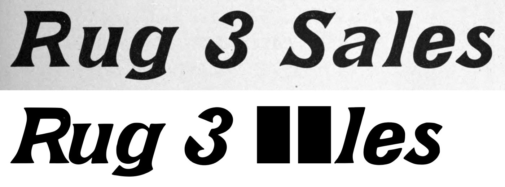
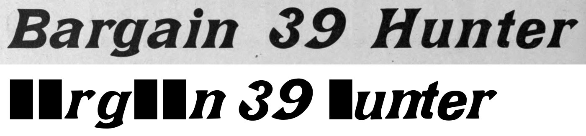
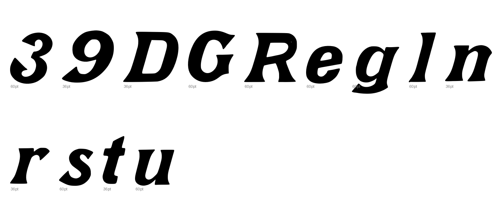
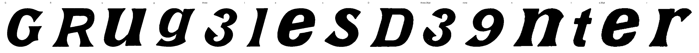

Gray letters are constructed, not traced.


0 warnings, 4 notes.
[
{
"level": "info",
"check": "specks",
"glyph": "three",
"value": 1,
"note": "marks beside the letter were recorded, not cut"
},
{
"level": "info",
"check": "specks",
"glyph": "l",
"value": 1,
"note": "marks beside the letter were recorded, not cut"
},
{
"level": "info",
"check": "specks",
"glyph": "three.36pt",
"value": 1,
"note": "marks beside the letter were recorded, not cut"
},
{
"level": "info",
"check": "specks",
"glyph": "nine",
"value": 1,
"note": "marks beside the letter were recorded, not cut"
}
]
{
"425:60pt": {
"n_caps": 2,
"cap_height_px": 259.0,
"cap_source": "caps",
"baseline_px": 1755,
"baselines": {
"4": 1755,
"5": 2103
},
"glyphs": [
"G",
"R",
"u",
"g",
"three",
"l",
"e",
"s"
],
"x_height_px": 194,
"figure_height_px": 264,
"stem_px": 57.5,
"scale": 2.7027,
"stem_units": 155.4,
"x_height": 524,
"figure_height": 714
},
"424:36pt": {
"n_caps": 1,
"cap_height_px": 156,
"cap_source": "caps",
"baseline_px": 3375,
"baselines": {
"2": 3375,
"3": 3595.5
},
"glyphs": [
"D",
"three.36pt",
"nine",
"n",
"t",
"e.36pt",
"r"
],
"x_height_px": 115.5,
"figure_height_px": 162.0,
"stem_px": 36,
"scale": 4.48718,
"stem_units": 161.5,
"x_height": 518,
"figure_height": 727
}
}
{
"archive_id": "bookoftypespecim00barnrich",
"title": "Book of type specimens. Comprising a large variety of superior copper-mixed types, rules, borders, galleys, printing presses, electric-welded chases, paper and card cutters, wood goods, book binding machinery etc., together with valuable information to the craft. Specimen book no.9",
"creator": [
"Barnhart, bros. & Spindler, firm, type founders, Chicago",
"De Young family",
"De Young, Charles, 1881-"
],
"publisher": "Chicago, Barnhart bros. & Spindler",
"date": "[1907]",
"ppi": 400,
"url": "https://archive.org/details/bookoftypespecim00barnrich",
"copyright_status": "NOT_IN_COPYRIGHT",
"contributor": "University of California Libraries",
"leaves": [
424,
425
]
}